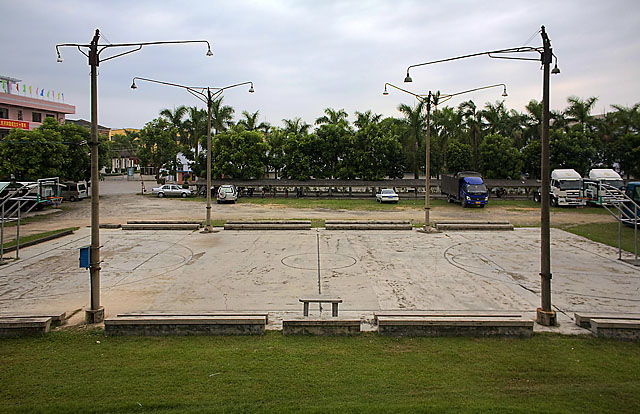
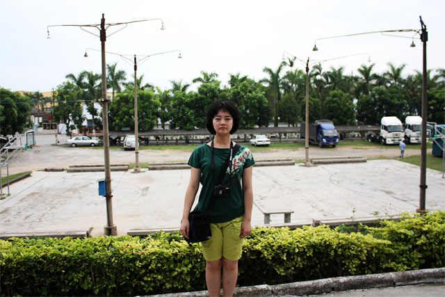

这次回家，抽空到了单位的篮球场拍了张照。周围的环境似乎整洁了不少，以往四周长得很高的杂草都清理掉了，换成了绿色的草地。篮球架也换了新的。不过这些改变都掩饰不了这里的冷清。自从大学毕业以后，我每次回来看这块场地，都没发现有什么人在活动，莫非是我来的时间不对？ 从小到大，我们这些小孩就在这里踢球长大，不是打篮球。我们喜欢踢小场地的五人制足球，这里是理想的场地。回想起这块场地上度过的数不清的岁月，最让我怀念的是这么一种感觉——每逢周末，寒假，暑假，每天下午的四点多，只要你没事你就可以下去踢球，那里总会有人等你，大家都是不约而至。这让人很有归属感。你可以某天不去，无所谓。因为是你需要这个集体，不是这个集体需要你。当然你第二天再去的时候，大家也会寒暄你一下昨天为什么没来。 就这一点来说，我很为我的童年生活而感到幸福。我了解很多城市里的小孩，或者是我们单位里的小女孩，他们的假期很多时候都没有那么丰富，也没有这样的一帮朋友。当时我们那个年龄段的小孩，刚好也是历年来我们厂里数量最多的，而且我们踢球的热情非常高，以至带动了厂里一些和我们年龄相仿的小孩也加入。还有一些不是厂里的孩子，只是我们的亲戚朋友，也都曾经来过。由于人数太多，一般我们都分四五拨，先被进球的一拨下场，下面的按顺序跟上。场地两边的石阶，当时都是给观众坐的，观众有时还是不少的，这让在里面踢球的人很有激情。
那么多年过去，这块场地从热闹又变得萧条。但曾经在这里踢过球的朋友，哪怕不是我们单位的，都对当时的这段日子，那种氛围甚为怀念。我又何尝不是。想起当年厂里保卫科的叔叔，为了保护绿化，保护球场四周停着的车辆不受破坏，不辞劳苦地拿着菜刀驱逐着我们；想起当年台风过后我们依然下去踢球，脑袋老往被吹弯下来的电灯柱上撞；想起我们在下雨过后生怕踢不了球，提前拿着扫把下去扫积水。 想起这些种种，心里不免有几分落寞。
